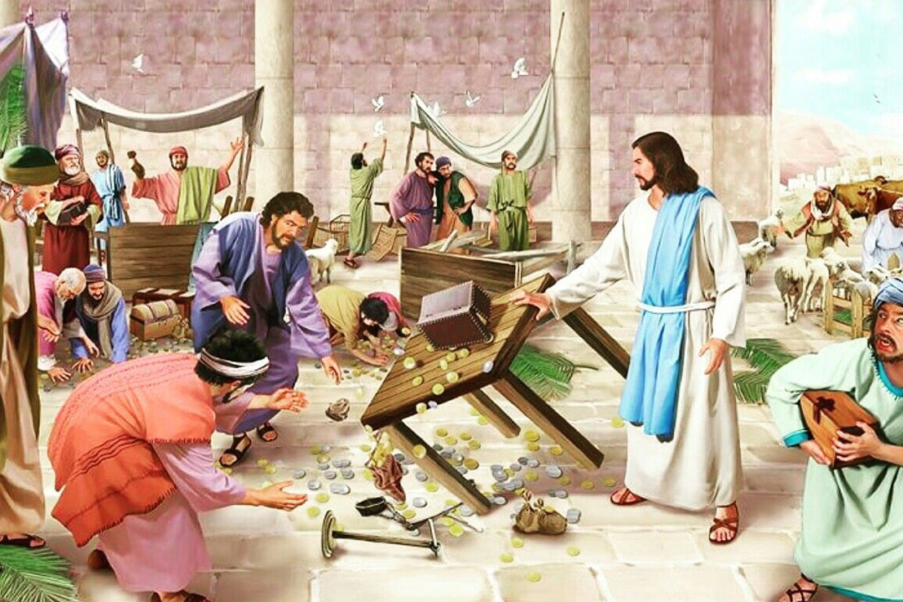

Leitura Orante
Leituras do Dia
Segunda-feira - Dedicação da Basílica do Latrão
(Branco – Ofício da festa)
09 de novembro de 2020

Leitura Orante do Evangelho
Ouça o áudio da oração e reflexão do padre Francisco das Chagas


Oração do dia
Ó Deus, que edificais o vosso templo eterno com pedras vivas e
escolhidas, difundi na vossa Igreja o Espírito que lhe destes,
para que o vosso povo cresça sempre mais, construindo a Jerusalém
celeste. Por Nosso Senhor Jesus Cristo, Vosso Filho, na unidade do
Espírito Santo.
Primeira leitura: Ezequiel 47,1-2.8-9.12
Naqueles dias, 1o homem fez-me voltar até a entrada do templo, e eis que saía água da sua parte subterrânea na direção leste, porque o templo estava voltado para o oriente; a água corria do lado direito do templo, a sul do altar. 2Ele fez-me sair pela porta que dá para o norte e fez-me dar uma volta por fora até a porta que dá para o leste, onde eu vi a água jorrando do lado direito. 8Então ele me disse: “Estas águas correm para a região oriental, descem para o vale do Jordão, desembocam nas águas salgadas do mar, e elas se tornarão saudáveis. 9Aonde o rio chegar, todos os animais que ali se movem poderão viver. Haverá peixes em quantidade, pois ali desembocam as águas que trazem saúde; e haverá vida aonde chegar o rio. 12Nas margens junto ao rio, de ambos os lados, crescerá toda espécie de árvores frutíferas; suas folhas não murcharão, e seus frutos jamais se acabarão: cada mês darão novos frutos, pois as águas que banham as árvores saem do santuário. Seus frutos servirão de alimento, e suas folhas serão remédio”. – Palavra do Senhor.
Salmo Responsorial: 45(46)
Os braços de um rio vêm trazer alegria à cidade de Deus, à morada do Altíssimo.O Senhor para nós é refúgio e vigor, sempre pronto, mostrou-se um socorro na angústia; assim não tememos se a terra estremece, se os montes desabam, caindo nos mares.
Os braços de um rio vêm trazer alegria à cidade de Deus, à morada do Altíssimo.
Os braços de um rio vêm trazer alegria à cidade de Deus, à morada do Altíssimo. Quem a pode abalar? Deus está no seu meio! Já bem antes da aurora, ele vem ajudá-la.
Os braços de um rio vêm trazer alegria à cidade de Deus, à morada do Altíssimo.
Conosco está o Senhor do universo! O nosso refúgio é o Deus de Jacó! Vinde ver, contemplai os prodígios de Deus e a obra estupenda que fez no universo: reprime as guerras na face da terra.
Os braços de um rio vêm trazer alegria à cidade de Deus, à morada do Altíssimo.Evangelho: João 2,13-22
13Estava próxima a Páscoa dos judeus, e Jesus subiu a Jerusalém. 14No templo, encontrou os vendedores de bois, ovelhas e pombas e os cambistas que estavam aí sentados. 15Fez então um chicote de cordas e expulsou todos do templo, junto com as ovelhas e os bois; espalhou as moedas e derrubou as mesas dos cambistas. 16E disse aos que vendiam pombas: “Tirai isto daqui! Não façais da casa de meu Pai uma casa de comércio!” 17Seus discípulos lembraram-se, mais tarde, que a Escritura diz: “O zelo por tua casa me consumirá”. 18Então os judeus perguntaram a Jesus: “Que sinal nos mostras para agir assim?” 19Ele respondeu: “Destruí este templo, e em três dias o levantarei”. 20Os judeus disseram: “Quarenta e seis anos foram precisos para a construção deste santuário, e tu o levantarás em três dias?” 21Mas Jesus estava falando do templo do seu corpo. 22Quando Jesus ressuscitou, os discípulos lembraram-se do que ele tinha dito e acreditaram na Escritura e na palavra dele. – Palavra da Salvação.
Leituras do mês
TAGS
missao Amazonia evengel covid-19 indigenas novica papa francisco
Destaques
Província Stella Matutina
Rua São Benedito, 2146 - Santo Amaro - São Paulo - SP |
Tel. (11) 5547-7222


Província Spiritus Divinae Sapientiae
Rua Arnaldo Janssen, 320 - Cara-Cara - Ponta Grossa - PR |
Tel. (42) 3326 4091